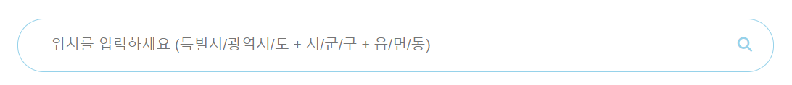

사용방법

1. 검색창에 자신의 위치 정보를 작성한다.
- (1) 특별시/광역시/도만을 아는 경우
- 예: 제주특별자치도 0 0
- (2) 시/군/구까지 아는 경우
- 예: 제주특별자치도 제주시 0
- (3) 읍/면/동까지 아는 경우
- 예: 제주특별자치도 제주시 아라동
2. Enter를 눌러 검색한다.
자신의 위치 정보를 입력한 후 검색 버튼을 클릭하여 오늘의 날씨를 확인합니다.
3. 오늘의 온도와 기상상태를 확인한다.
현재 날씨 정보를 확인하고, 기온과 기상 상태를 살펴봅니다.
4. 추천 옷차림을 참고한다.
오늘의 날씨에 맞는 추천 옷차림을 확인하고 준비합니다.
5. 멋쟁이가 된다 - !
추천 옷차림을 따라 멋쟁이가 되어보세요!